像个桌面软件。
界面是 MyGo 画的原生界面，不是套一层网页。侧栏、全屏播放页、律动舞台、系统媒体键、全局快捷键、深浅色主题都有；关窗口收进托盘接着放。
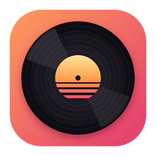
MySpotifyMYSPOTIFY · 非官方 · 开源 · WINDOWS / MACOS
原生界面，会滚动的歌词，MV 和视频播客。免费账号也能整首播放，不登录也能先逛。
个人项目，和 Spotify 没有任何关系，使用它账号有被限制的风险。先看风险说明
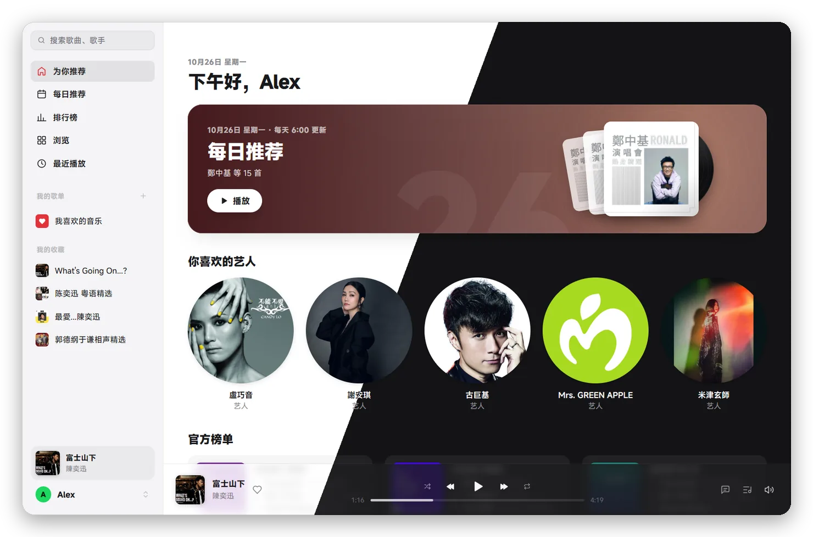
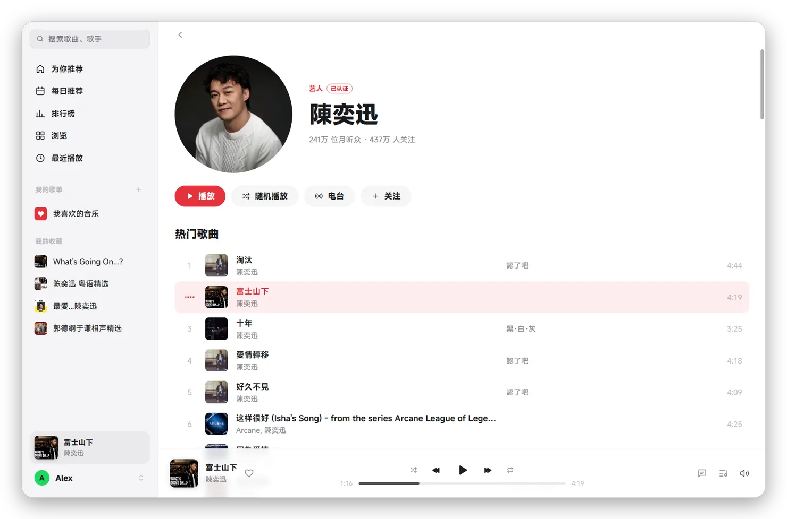
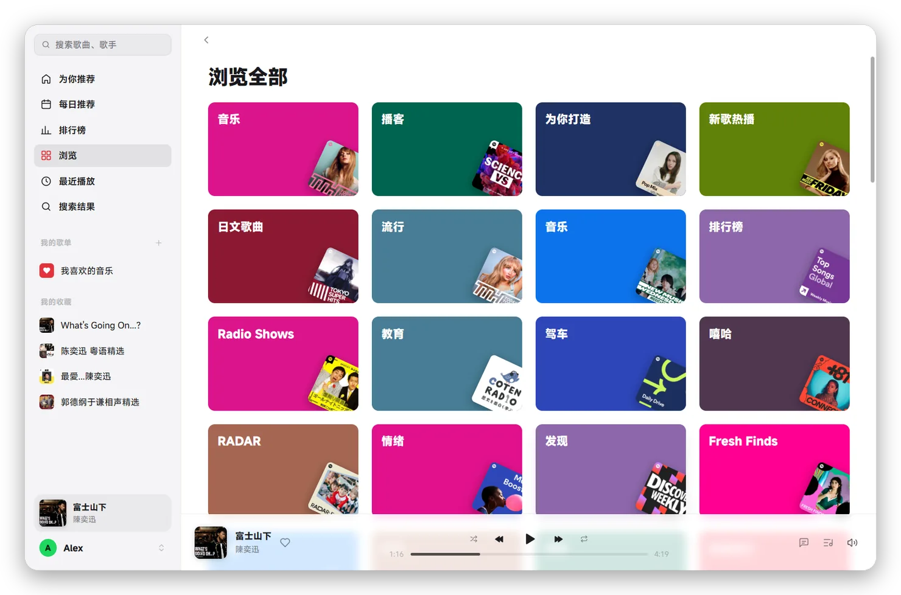
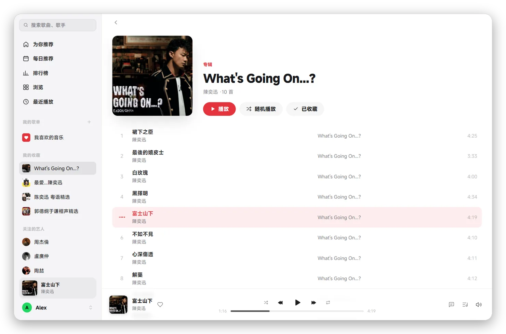
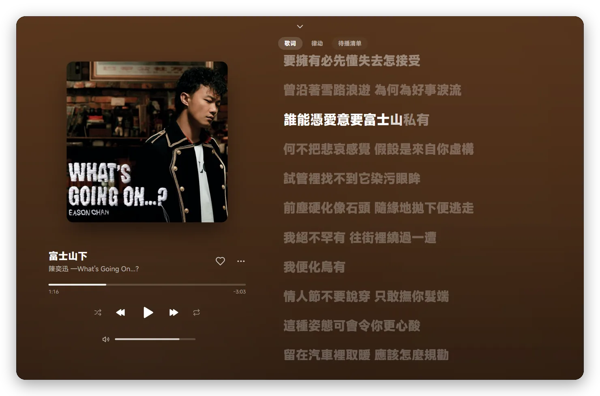
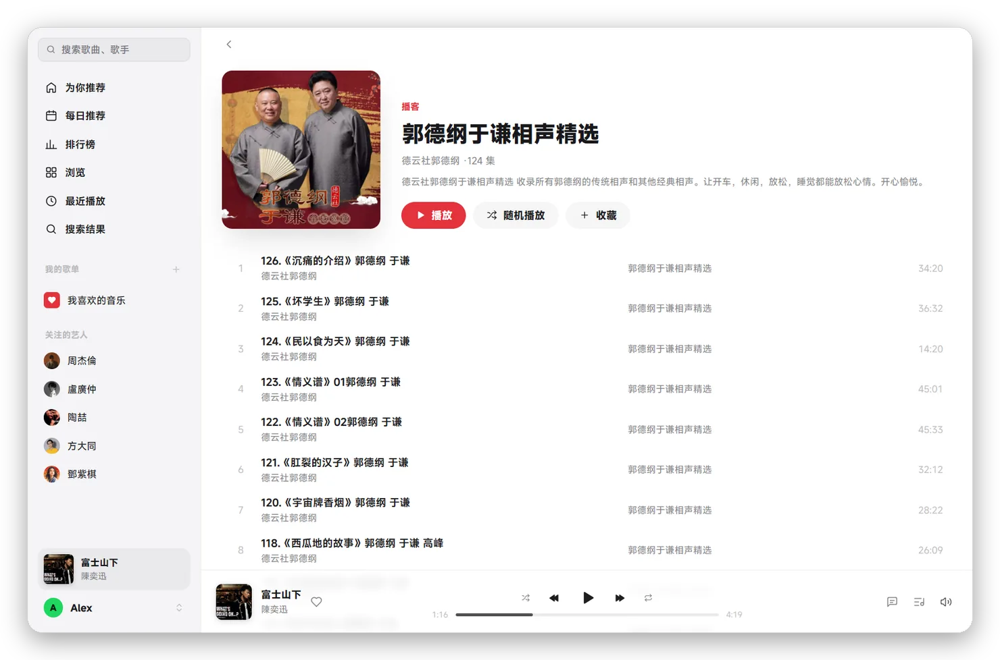
界面是 MyGo 画的原生界面，不是套一层网页。侧栏、全屏播放页、律动舞台、系统媒体键、全局快捷键、深浅色主题都有；关窗口收进托盘接着放。
打开就能搜索，看首页、歌单、专辑和艺人页：MySpotify 像网页播放器一样自己取一个访客身份。要听歌再登录。
登录走 Spotify 官方的登录页。音频由系统网页组件自带的 DRM 模块解密，和你在浏览器里听是同一条路，128k AAC。
Spotify 没有的，去网易云和 LRCLIB 找，带时间轴的优先，按歌名和时长核对版本，不乱配。外语歌有中文翻译时一起显示。
有 MV 的歌带个小标，点它就放，播放栏里也能随时切换。可以放在封面的位置、铺满窗口或者全屏，下方跟着当前这句歌词。
视频播客点一下就看画面。逐字稿像歌词一样跟着滚，一个词一个词亮起，点一句就跳过去。
TRACKLIST
SCREENS
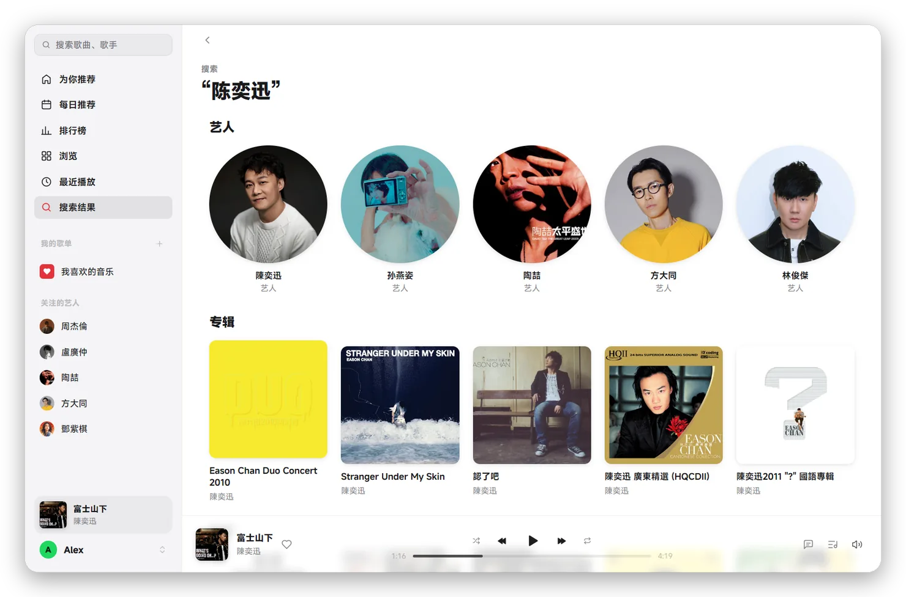
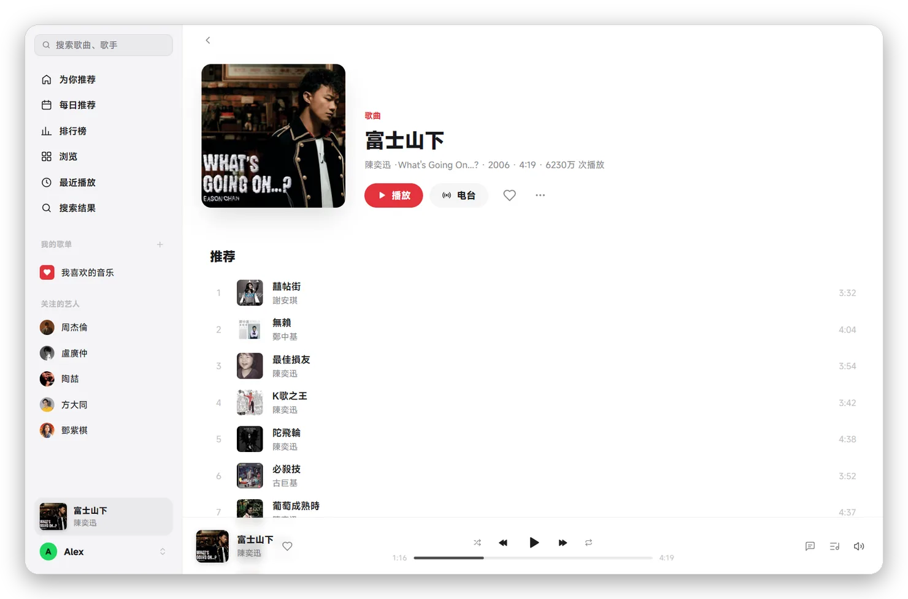
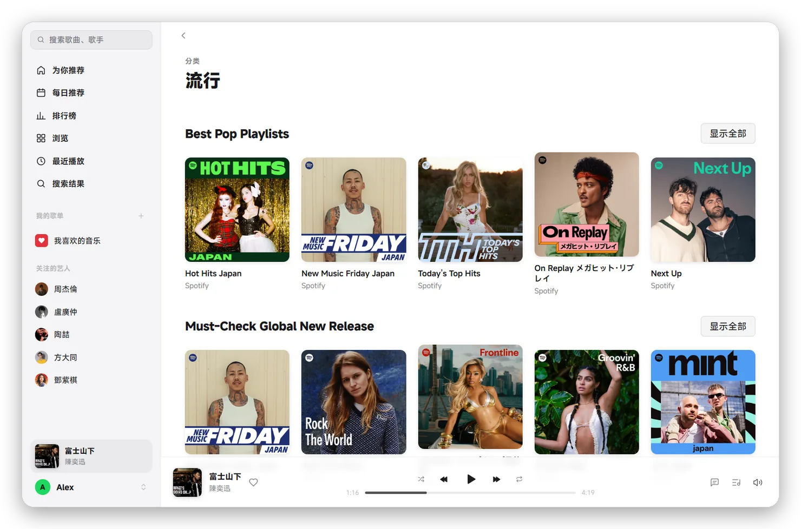
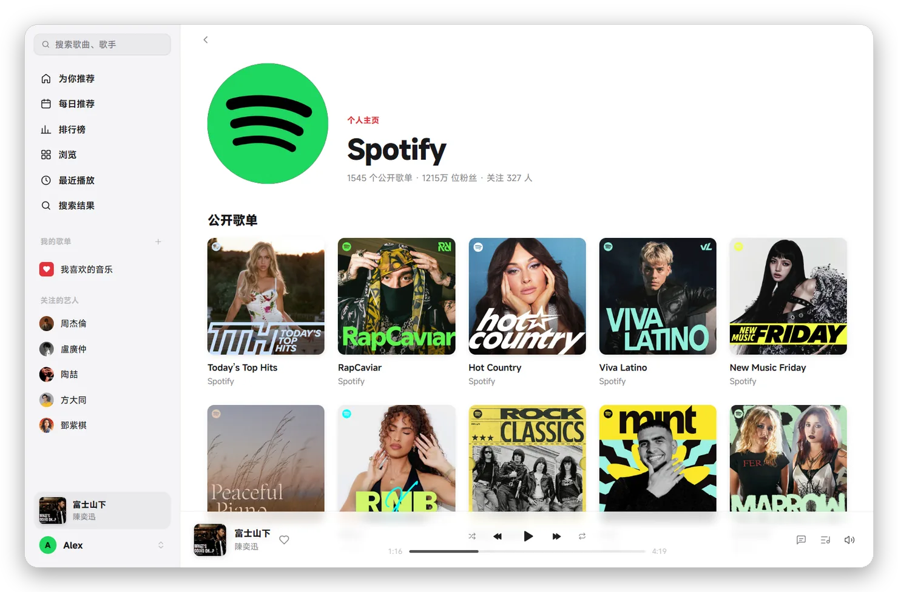
BEHIND THE SCENES
电脑会出现在手机 Spotify 的设备列表里，点它就转到电脑上放。手机在放时，电脑这边也能看到、能遥控。
许可证过期自动换身份重试；被限流就按 Spotify 要求的时间等完，从原位置接着放；断网了等网络回来接着放。
放过的歌（加密分段，原样存下）留在本机，再放更快、不耗流量。上限在设置里选，也能一键清除。
设置和播放记录都在本机，续期用的 cookies 加密保存。只连 Spotify、Gravatar、查歌词时的网易云和 LRCLIB，以及检查更新时的 GitHub。
READ THIS FIRST
用的是网页播放器的内部接口，没有公开文档，Spotify 一改就可能坏。
Spotify 的条款不允许第三方程序访问它的服务，可能导致账号被限制或封禁。只用你自己的账号，别做商业用途。
网页版免费账号会插广告，MySpotify 不放。Spotify 很可能不喜欢这点；介意的话请用官方客户端或订阅 Premium。
解密在系统的 Widevine 或 FairPlay 模块里完成，程序拿不到密钥和解密后的内容。每次播放都要申请许可证，不能离线。
INSTALL
Apple 芯片
xattr -dr com.apple.quarantine /Applications/MySpotify.app。Windows 10 / 11，需要 WebView2 运行时（Windows 11 自带）
MySpotify.exe。以后的版本在「设置 › 关于」里点「更新并重启」就行。设置和登录都不跟着程序文件，不会丢。
FAQ
这首歌在你所在地区不可播，或者 Spotify 拒绝了许可证。同一首在网页版也放不了的话，就是版权问题。
什么都不用做。MySpotify 会按 Spotify 要求的时间等完，再从刚才的位置接着放。短时间里别反复起播，就不容易碰到。
缓存的是加密的音频，解密要用 Spotify 当场发的许可证。缓存省的是流量和缓冲时间。
默认跟随系统代理。也可以在「设置 › 网络 › 代理」填 127.0.0.1:7890、http://…、https://… 或 socks5://…。
关窗口只是收进托盘，音乐照常放。要退出：右键托盘图标 › 退出 MySpotify。